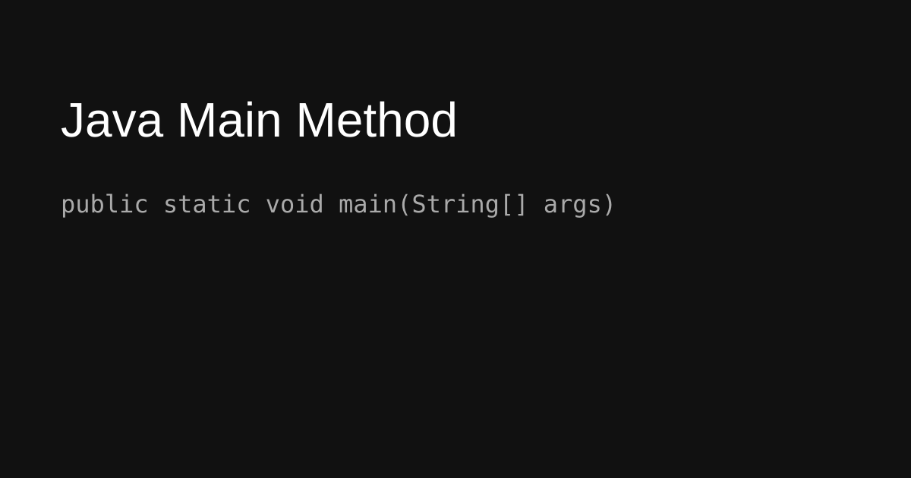
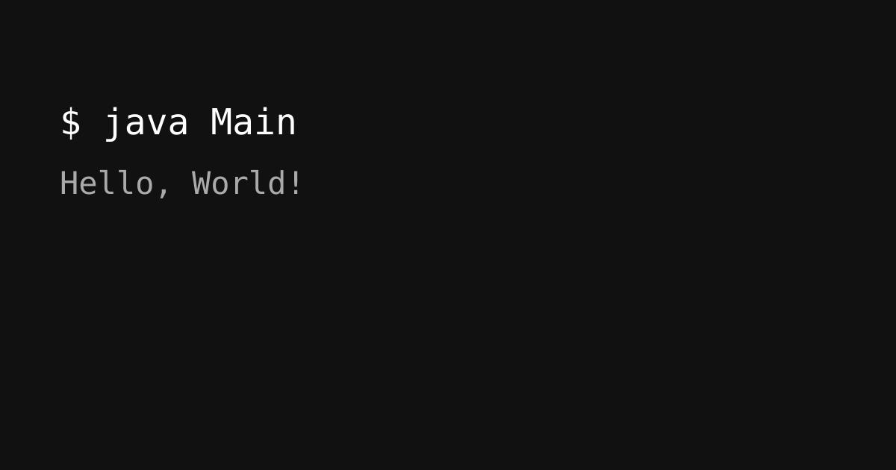

Java Main Method
Understanding the Java main method and the structure of a simple Java program.
Java Main Method
The main method is the entry point of a Java application.

public class Main {
public static void main(String[] args) {
System.out.println("Hello, World!");
}
}